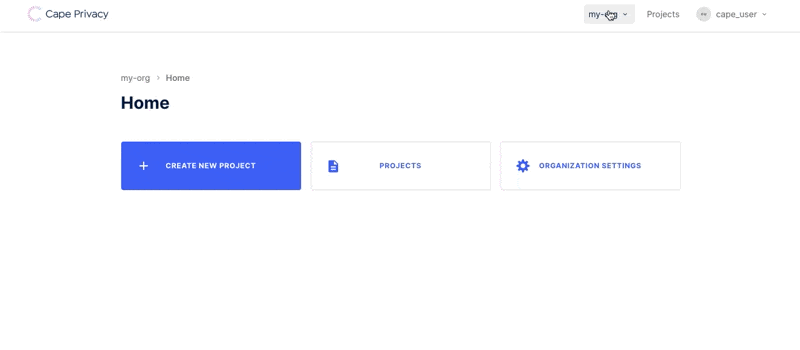
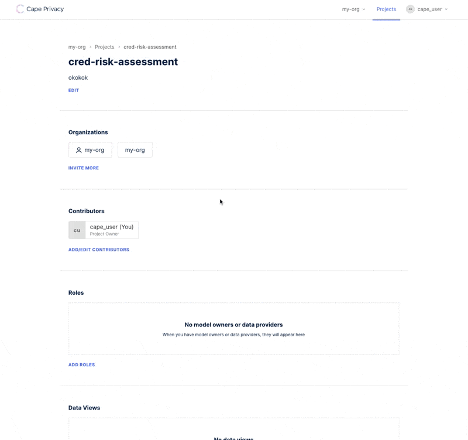
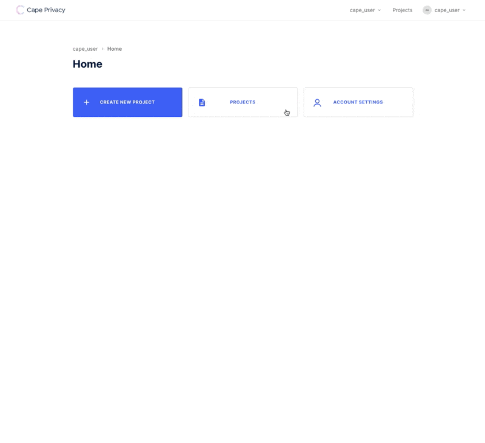

Train a Linear Regression Model using Cape DataViews & Jobs#
This tutorial will walk you through the process of training an encrypted linear regression model in collaboration with another organization using Cape Privacy. You'll learn how to:
- Send datasets securely to Cape Cloud
- Review the schemas of datasets belonging to collaborating organizations
- Approve and reject model computation jobs
- View the metrics or weights of the trained model, depending on your role in the project
We'll use the Cape UI to setup and review actvity in the project.
We'll also use the cape-ds Python library to create and review pointers to datasets or DataViews, and create and review Jobs, Cape Python objects that contain instructions for how to train a model using the data provided.
**TODO:**
- Docs on project/task roles (/understand/features/roles/)
- Docs on workers
Project Setup#
Create an Organization#
First you'll need to create an organization at demo.capeprivacy.com.

Once you've created your organization, you can navigate to Organization Settings and generate a token for your organization. You'll need this token to configure your worker.
Take note of this value as you cannot recover it after you reload the page.
Create a Project#
Next, create a Project within one of the organizations you just created.
Projects serve as the context in which you can define and review Jobs with other organizations.

Add organizations to your project in order to begin collaborating with them on training a model.

Get a User Token#
Finally, we will need a user token to authenticate against cape-ds. Ensure you are
working within your user context and navigate to Account Settings to create a token.

Take note of this value as, like the user token, you cannot recover it after you reload the page.
That is it for the UI for now! We'll return later to review and approve DataViews and Jobs.
Next we will setup DataViews and Jobs in cape-ds.
Login to Cape DS#
Before you can make requests to Cape Cloud, you'll need to authenticate with the API. Follow these instructions to authenticate with our API using cape-ds. Once you've logged in successfully, you should see a success message.
>>> c = Cape()
>>> c.login()
Login successful
Add a DataView to your project#
Use the list_projects method defined on the main Cape class, to query a list of projects that belong to your organization.
>>> my_projects = c.list_projects()
PROJECT ID NAME LABEL
----------- ------------------ ------------------
project_123 Sales Transactions sales-transactions
>>> my_projects
[Project(id=project_123, name=Sales Transactions, label=sales-transactions)]
Once you have the project in-memory that you want to add a DataView to, you can initialize a DataView class and pass the instance to the add_dataview method.
>>> my_project = c.get_project(id="project_123")
>>> data_view = DataView(
>>> name="my-data",
>>> uri="s3://my-data.csv",
>>> owner_label="my-org"
>>> )
>>> my_project.add_dataview(data_view)
DataViews must be associated with an organization. This association can be made by passing eiher an owner_label or an owner_id to the DataView class instantiation.
TODO: Add note about how you can find your org label.
Note
Unless your dataset is publically accessible, you'll need to specify your schema.
Review Your Collaborator's DataView#
Before we can submit a job to train our linear regression model, we'll need to review the DataViews added to the project by our collaborators.
Use the list_dataviews method defined on the Project class to inspect the name, owner (organization) and location of DataViews added to the project:
>>> my_project = c.get_project(id="project_123")
>>> dataviews = my_project.list_dataviews()
DATAVIEW ID NAME LOCATION OWNER
----------- ------------- --------------- -----------
01EY48 armazorn-data s3://mydata.csv armazorn (You)
01EY49 gorgle-data gorgle
Note
You'll only be able to see the locations or URIs of datasets that belong to your organization.
You can also inspect the schema of each dataview in your project in order to see the data types of the columns, and to assess which data columns should be used to train the linear regression model.
>>> dataviews[1].schema
{
'transaction_date': 'datetime',
'state': 'string',
'total_estimated_sales': 'integer'
}
Submitting a Linear Regression Job#
Now that we've added our own DataView to the project, and vetted the DataView of our collaborator, we are ready to submit our Cape linear regression job.
Pass the DataView that contains training data to x_train_dataview, and the DataView that contains the target values to y_train_dataview.
>>> dataview_1 = my_project.get_dataview(id="01EY48")
>>> dataview_2 = my_project.get_dataview(id="01EY49")
>>> lr_job = VerticalLinearRegressionJob(
>>> x_train_dataview=dataview_1,
>>> y_train_dataview=dataview_2,
>>> )
>>> my_project.submit_job(job=lr_job)
You can also specify which data columns the model should be trained on or evaluated against by passing the dataview to the VerticalLinearRegressionJob class like so:
>>> lr_job = VerticalLinearRegressionJob(
>>> x_train_dataview=dataview_1["x_total_estimated_sales"],
>>> y_train_dataview=dataview_2["y_total_estimated_sales"],
>>> )
Tracking Job Status#
After submitting your job, you should be able to see the status and details of your Job in the UI.
TODO: Add GIF of Job/Job Details UI here.
To check the status of your submitted linear regression job, use the get_status method:
>>> lr_job = my_project.get_job(id="abc_123")
>>> lr_job.get_status()
Success
Approving Jobs#
TODO: Need to know what the workflow is here.
Getting Weights and Metrics from Trained Model#
Once your job has successfully completed, you can view the results of the trained model.
Whether you can view the weights or metrics of the trained model (or both!) depends on the role you and your organization play in the project.
TODO: Need to elaborate on project/task roles, link to seperate documentation about this.
To view the weights and metrics of a job, use the get_results method:
>>> lr_job = my_project.get_job(id="abc_123")
>>> weights, metrics = lr_job.get_results()
>>> weights
array([12.14955139, 1.96560669])
>>> metrics
{'r_squared_result': [0.8804865768463074], 'mse_result': [37.94773864746094]}
If you are the model owner, the first value in the returned tuple will be populated with a numpy array of weights from your trained model.
Note
To access model weights you'll need to inform cape-ds about your IAM authentication credentials.